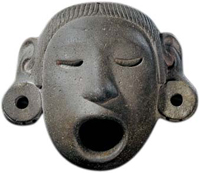
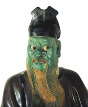
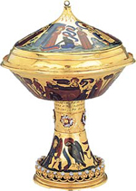
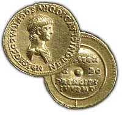

|
|
 Las colecciones del museo
Las colecciones del museo
|
|
El Museo Británico
consta de casi cien galerías. La selección de objetos expuestos
es semipermanente: no es posible tener todos los fondos del museo
expuestos todo el tiempo. Los grabados y los dibujos, en particular,
se exponen únicamente durante períodos de tiempo limitados por motivos
de conservación. El museo cuenta con más de 50.000 artículos expuestos.
Los objetos más importantes sólo se retiran para llevar a cabo tareas
de investigación o de conservación esenciales, o bien para cederlos
en préstamo a otras exposiciones; la oferta es, por lo tanto, muy
extensa.
|
África
y América
Las colecciones etnográficas, con un total de más de 350.000 objetos,
son representativas de las culturas de pueblos indígenas de todo el
mundo. Su alcance es tanto histórico como contemporáneo, y se centran
en África, Asia, Oriente Medio, Europa Oriental, Oceanía y América,
incluyendo las magníficas colecciones traídas del Pacífico y de la
costa noroeste de Norteamérica por los capitanes Cook y Vancouver
en los siglos XVII y XVIII. Las colecciones en exposición permanente
en la actualidad son las de África Occidental, Norteamérica y México.
Department
of Ethnography |
 |
Antiguo
Oriente Próximo
Las extensas colecciones de la planta principal incluyen bajorrelieves
de ceremonias estatales, caza y batallas provenientes de los palacios
de los reyes asirios de Nimrud, Khorsabad y Nínive. Las galerías Raymond
y Beverly Slacker de la planta superior contienen objetos provenientes
de Irán, Anatolia, Mesopotamia y Levante, e incluyen el tesoro de
Oxus, el cementerio real de Ur y hallazgos realizados en Jericó.
Department
of the Ancient Near East |
 |
Asia
El Museo Británico cuenta con la más rica colección de antigüedades,
pinturas y porcelana chinas de Europa, y el mejor conjunto de cerámica
islámica fuera del mundo islámico. Las colecciones de escultura procedentes
del subcontinente indio son las más representativas en Occidente;
a todo ello se añade una nueva galería dedicada a Corea.
Department
of Oriental Antiquities
Korea
Foundation Gallery |
 |
Gran
Bretaña y Europa
Las galerías del piso superior cubren las edades de bronce y de hierro
en Europa, la Gran Bretaña romana y Europa desde la Edad Media hasta
la Edad Moderna. Las galerías incluyen también arte y arqueología
de otras culturas cristianas y judías, incluyendo la región de Anatolia
y el Cáucaso. En estas galerías se exponen los tesoros de Mildenhall,
Hoxne y Snettisham, el barco funerario de Sutton Hoo y las piezas
de ajedrez de Lewis. Esta planta contiene también una selección representativa
de la colección de relojes del museo.
Department
of Prehistory and Europe |
 |
Egipto
El museo alberga una de las más importantes colecciones egiptológicas
fuera de El Cairo. La colección ilustra todos los aspectos de la cultura
del antiguo Egipto, desde tiempos predinásticos (unos 4.000 años aC)
hasta el período copto (cristiano; siglo XII dC), e incluye un número
significativo de piezas de Nubia y Sudán. Las principales piezas escultóricas
se encuentran en la planta principal; las galerías Roxie Walker de
arqueología funeraria egipcia, donde se encuentra la importante exposición
de momias, están ubicadas en los pisos superiores.
Department
of Ancient Egypt and Sudan |
 |
Grecia
y Roma
Estas galerías contienen objetos del mundo griego desde inicios de
la edad de bronce; de Italia y Roma desde la edad de bronce; y de
todo el imperio romano, excepto Gran Bretaña (ver Gran Bretaña y Europa
más arriba). Las colecciones son especialmente notables por sus ejemplos
de escultura arquitectónica griega, joyas y bronces antiguos, vasijas
griegas y plata romana. Las esculturas del Partenón (también conocidas
como mármoles de Elgin) y del mausoleo de Halicarnaso se encuentran
en la planta principal.
Department
of Greek and Roman Antiquities |
 |
Japón
El Museo Británico contiene una de las mejores y más exhaustivas colecciones
de artes decorativas y pinturas japonesas en Europa, incluyendo una
impresionante y creciente colección de arte gráfico japonés anterior
al siglo XX. Aparte de la donación Hull Grundy de obras de Inro y
Netsuje, no hay exposiciones permanentes; las colecciones se muestran
en exposiciones temporales para proteger los frágiles soportes de
las obras y evitar su exposición durante largo tiempo a la luz y la
humedad.
Department of Japanese Antiquities |
 |
Numismática
La magnífica colección de más de 750.000 monedas cubre la historia
de la acuñación desde sus orígenes en el siglo 7 aC hasta el día de
hoy, e incluye materiales relacionados, como pesas, fichas y monedas
de juguete. El museo alberga también la colección nacional de billetes,
que abarca desde ejemplares chinos del siglo XIV a billetes de curso
legal de bancos de todo el mundo. El material numismático incluye
una colección incomparable de medallas conmemorativas y artísticas,
que constituyen un registro visual de acontecimientos históricos y
escuelas artísticas desde el renacimiento italiano hasta el siglo
XXI.
Department
of Coins and Medals |
 |
Grabados
y dibujos
Nuestra colección es una de las mejores del mundo, con prácticamente
tres millones de obras sobre papel desde el siglo XV hasta el día
de hoy, que abarcan toda la historia de las principales escuelas de
arte gráfico, además de incluir importantes colecciones de ephemera
(panfletos, recortes, octavillas, etc.). Los ejemplares más notables
de la colección son grabados y dibujos de maestros antiguos de todas
las escuelas, dibujos satíricos de los siglos XVIII y XIX y obras
británicas de todos los períodos. Los grabados y los dibujos se exhiben
en exposiciones temporales en la sala 90.
Department
of Prints and Drawings |
 |
|